<?xml version="1.0" encoding="UTF-8"?>
<rss version="2.0"
	xmlns:content="http://purl.org/rss/1.0/modules/content/"
	xmlns:wfw="http://wellformedweb.org/CommentAPI/"
	xmlns:dc="http://purl.org/dc/elements/1.1/"
	xmlns:atom="http://www.w3.org/2005/Atom"
	xmlns:sy="http://purl.org/rss/1.0/modules/syndication/"
	xmlns:slash="http://purl.org/rss/1.0/modules/slash/"
	>

<channel>
	<title>Chronosynclastic Infundibulum &#187; travel</title>
	<atom:link href="http://www.semanticoverload.com/category/travel/feed/" rel="self" type="application/rss+xml" />
	<link>http://www.semanticoverload.com</link>
	<description>The world through my prisms</description>
	<lastBuildDate>Thu, 07 Apr 2011 17:36:17 +0000</lastBuildDate>
	<language>en-US</language>
	<sy:updatePeriod>hourly</sy:updatePeriod>
	<sy:updateFrequency>1</sy:updateFrequency>
	<generator>http://wordpress.org/?v=3.5</generator>
		<item>
		<title>Visiting Vatican: A Picture Gallery</title>
		<link>http://www.semanticoverload.com/2010/07/31/visiting-vatican-a-picture-gallery/</link>
		<comments>http://www.semanticoverload.com/2010/07/31/visiting-vatican-a-picture-gallery/#comments</comments>
		<pubDate>Sun, 01 Aug 2010 01:48:33 +0000</pubDate>
		<dc:creator>Semantic Overload</dc:creator>
				<category><![CDATA[photo]]></category>
		<category><![CDATA[religion]]></category>
		<category><![CDATA[travel]]></category>
		<category><![CDATA[bernini]]></category>
		<category><![CDATA[micheangelo]]></category>
		<category><![CDATA[st. peters]]></category>
		<category><![CDATA[Vatican]]></category>

		<guid isPermaLink="false">http://www.semanticoverload.com/?p=488</guid>
		<description><![CDATA[I was in Rome last year. Here are select photographs from my visit to the Vatican.]]></description>
				<content:encoded><![CDATA[<p>I was in Rome last year. Here are select photographs from my visit to the Vatican.<br />

				<script type='text/javascript'>
					var flashvars = {};
					flashvars.file = 'http://www.semanticoverload.com/wp-content/plugins/wordpress-gallery-slideshow/org/myplugins/slideshow/getxml.php?attr=id^488#';
					
					flashvars.rotatetime = '5';
					flashvars.autostart = 'false';
					flashvars.backcolor = '0xFFFFFF';
					flashvars.frontcolor = '0x000000';
					flashvars.lightcolor = '0x000000';
					flashvars.screencolor = '0x000000';
					flashvars.screenalpha = 'false'
					flashvars.logo = '';
					flashvars.transition = 'fade';
					flashvars.shuffle = 'false';
					flashvars.overstretch = 'false';
					flashvars.shownavigation = 'true';
					flashvars.height = '480';
					flashvars.width = '640';
					var params = {};
					params.allowFullScreen = 'true';
					params.wmode = 'transparent';
					params.menu = 'false';
					var attributes = {};
					swfobject.embedSWF ('http://www.semanticoverload.com/wp-content/plugins/wordpress-gallery-slideshow/org/myplugins/slideshow/imagerotator.swf', 'slideshow_1', '640', '480', '9.0.0', false, flashvars, params, attributes);
				</script>
				<div class='slideshow' id='slideshow_1'>
					
<a href='../../../2010/07/31/visiting-vatican-a-picture-gallery/img_1569/index.html' title='St. Peter&#039;s Square complete with a vandalized piece of Egyptian heritage '>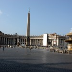</a>
<a href='../../../2010/07/31/visiting-vatican-a-picture-gallery/img_1577/index.html' title='Dome 1'>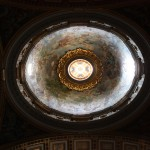</a>
<a href='../../../2010/07/31/visiting-vatican-a-picture-gallery/img_1578/index.html' title='Nauseating Opulence'>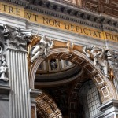</a>
<a href='../../../2010/07/31/visiting-vatican-a-picture-gallery/img_1581/index.html' title='One of the Domes of St. Peter&#039;s Basilica'>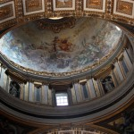</a>
<a href='../../../2010/07/31/visiting-vatican-a-picture-gallery/img_1584/index.html' title='The third dome of St. Peter&#039;s'>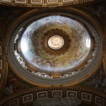</a>
<a href='../../../2010/07/31/visiting-vatican-a-picture-gallery/img_1587/index.html' title='I&#039;ll bet this is how they dupe believers into seeing the &#039;divinity&#039; of the Vatican'>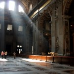</a>
<a href='../../../2010/07/31/visiting-vatican-a-picture-gallery/img_1594/index.html' title='The artistic excellence on showcase is unparalleled'>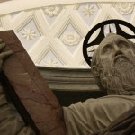</a>
<a href='../../../2010/07/31/visiting-vatican-a-picture-gallery/img_1595/index.html' title='Yes, that&#039;s granite fashioned to show folds of a fabric!'>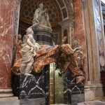</a>
<a href='../../../2010/07/31/visiting-vatican-a-picture-gallery/img_1598/index.html' title='Love the light'>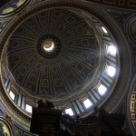</a>
<a href='../../../2010/07/31/visiting-vatican-a-picture-gallery/img_1600-1/index.html' title='St. Veronica - 1'>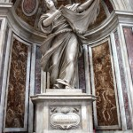</a>
<a href='../../../2010/07/31/visiting-vatican-a-picture-gallery/img_1601/index.html' title='Here&#039;s another example of Bernini&#039;s genius! Looks at how he has fashioned marble to show the folds of the fabric worn by St. Veronica'>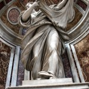</a>
<a href='../../../2010/07/31/visiting-vatican-a-picture-gallery/img_1603/index.html' title='IMG_1603'></a>
<a href='../../../2010/07/31/visiting-vatican-a-picture-gallery/img_1606/index.html' title='IMG_1606'>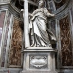</a>
<a href='../../../2010/07/31/visiting-vatican-a-picture-gallery/img_1608/index.html' title='IMG_1608'></a>
<a href='../../../2010/07/31/visiting-vatican-a-picture-gallery/img_1614/index.html' title='IMG_1614'>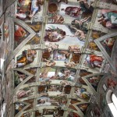</a>
<a href='../../../2010/07/31/visiting-vatican-a-picture-gallery/img_1615/index.html' title='IMG_1615'>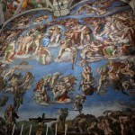</a>
<a href='../../../2010/07/31/visiting-vatican-a-picture-gallery/img_1616/index.html' title='IMG_1616'>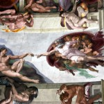</a>

				</div>
				
<br />
<span id="more-488"></span>	<div class='gallery' id='gallery_2'>
							
<a href='../../../2010/07/31/visiting-vatican-a-picture-gallery/img_1569/index.html' title='St. Peter&#039;s Square complete with a vandalized piece of Egyptian heritage '></a>
<a href='../../../2010/07/31/visiting-vatican-a-picture-gallery/img_1577/index.html' title='Dome 1'></a>
<a href='../../../2010/07/31/visiting-vatican-a-picture-gallery/img_1578/index.html' title='Nauseating Opulence'></a>
<a href='../../../2010/07/31/visiting-vatican-a-picture-gallery/img_1581/index.html' title='One of the Domes of St. Peter&#039;s Basilica'></a>
<a href='../../../2010/07/31/visiting-vatican-a-picture-gallery/img_1584/index.html' title='The third dome of St. Peter&#039;s'></a>
<a href='../../../2010/07/31/visiting-vatican-a-picture-gallery/img_1587/index.html' title='I&#039;ll bet this is how they dupe believers into seeing the &#039;divinity&#039; of the Vatican'></a>
<a href='../../../2010/07/31/visiting-vatican-a-picture-gallery/img_1594/index.html' title='The artistic excellence on showcase is unparalleled'></a>
<a href='../../../2010/07/31/visiting-vatican-a-picture-gallery/img_1595/index.html' title='Yes, that&#039;s granite fashioned to show folds of a fabric!'></a>
<a href='../../../2010/07/31/visiting-vatican-a-picture-gallery/img_1598/index.html' title='Love the light'></a>
<a href='../../../2010/07/31/visiting-vatican-a-picture-gallery/img_1600-1/index.html' title='St. Veronica - 1'></a>
<a href='../../../2010/07/31/visiting-vatican-a-picture-gallery/img_1601/index.html' title='Here&#039;s another example of Bernini&#039;s genius! Looks at how he has fashioned marble to show the folds of the fabric worn by St. Veronica'></a>
<a href='../../../2010/07/31/visiting-vatican-a-picture-gallery/img_1603/index.html' title='IMG_1603'></a>
<a href='../../../2010/07/31/visiting-vatican-a-picture-gallery/img_1606/index.html' title='IMG_1606'></a>
<a href='../../../2010/07/31/visiting-vatican-a-picture-gallery/img_1608/index.html' title='IMG_1608'></a>
<a href='../../../2010/07/31/visiting-vatican-a-picture-gallery/img_1614/index.html' title='IMG_1614'></a>
<a href='../../../2010/07/31/visiting-vatican-a-picture-gallery/img_1615/index.html' title='IMG_1615'></a>
<a href='../../../2010/07/31/visiting-vatican-a-picture-gallery/img_1616/index.html' title='IMG_1616'></a>

						</div>
						
</p>
]]></content:encoded>
			<wfw:commentRss>http://www.semanticoverload.com/2010/07/31/visiting-vatican-a-picture-gallery/feed/</wfw:commentRss>
		<slash:comments>0</slash:comments>
		</item>
		<item>
		<title>Up Close and Personal</title>
		<link>http://www.semanticoverload.com/2010/07/29/up-close-and-personal/</link>
		<comments>http://www.semanticoverload.com/2010/07/29/up-close-and-personal/#comments</comments>
		<pubDate>Thu, 29 Jul 2010 05:18:17 +0000</pubDate>
		<dc:creator>Semantic Overload</dc:creator>
				<category><![CDATA[photo]]></category>
		<category><![CDATA[travel]]></category>
		<category><![CDATA[elche]]></category>
		<category><![CDATA[grasshopper]]></category>
		<category><![CDATA[locust]]></category>
		<category><![CDATA[spain]]></category>

		<guid isPermaLink="false">http://www.semanticoverload.com/?p=465</guid>
		<description><![CDATA[]]></description>
				<content:encoded><![CDATA[<div id="attachment_466" class="wp-caption aligncenter" style="width: 650px"><a href="../../../wp-content/uploads/2010/07/spain-sept-2009-086.jpg"><br />
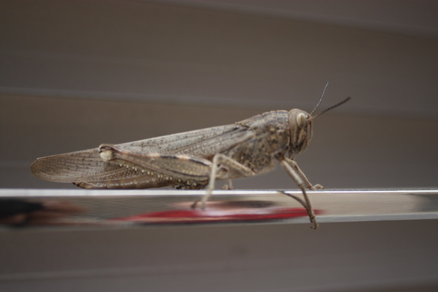</a><p class="wp-caption-text">I saw this solitary locust in Elche, Spain last year. Thought it made an interesting shot.</p></div>
]]></content:encoded>
			<wfw:commentRss>http://www.semanticoverload.com/2010/07/29/up-close-and-personal/feed/</wfw:commentRss>
		<slash:comments>0</slash:comments>
		</item>
		<item>
		<title>Niagara Falls, Canada on a budget &#8211; Part 3</title>
		<link>http://www.semanticoverload.com/2007/09/13/niagara-falls-canada-on-a-budget-part-3/</link>
		<comments>http://www.semanticoverload.com/2007/09/13/niagara-falls-canada-on-a-budget-part-3/#comments</comments>
		<pubDate>Thu, 13 Sep 2007 20:42:01 +0000</pubDate>
		<dc:creator>Semantic Overload</dc:creator>
				<category><![CDATA[travel]]></category>

		<guid isPermaLink="false">http://semanticoverload.gaddarinc.com/?p=117</guid>
		<description><![CDATA[So far we have seen things to do and see for the first day at Niagara Falls. Come evening, there isnt much to do around there unless you want sink a load of cash on the tourist traps in the Clifton Hill region. I would strongly advice you against that. Late in the evening, you [...]]]></description>
				<content:encoded><![CDATA[<p>So far we have seen things to do and see for the first day at Niagara Falls. Come evening, there isnt much to do around there unless you want sink a load of cash on the tourist traps in the Clifton Hill region. I would strongly advice you against that.</p>
<p>Late in the evening, you can walk down to the falls to see it illuminated in rainbow colors. Its quite a sight. Also, there is the fireworks on some evenings. They are definitely worth a dekko, and you wont have to spend a</p>
<p>penny.</p>
<table>
<tbody>
<tr>
<td><a title="Fireworks on the falls" href="http://img.photobucket.com/albums/v92/semanticoverload/niagara%20falls%20canada/IMG_3483.jpg"></a></td>
<td></td>
</tr>
<tr>
<th colspan="2">Firework display on the falls</th>
</tr>
</tbody>
</table>
<p><span id="more-117"></span><br />
The HI Hostel itself has something called &#8216;pub crawl&#8217; on weekend evenings. If you are the kind who enjoys bars and pubs, you might want to go to that. Its also a great  way to meet other people in the hostel.</p>
<p>That&#8217;s the end of day 1. Now day 2.</p>
<p>On day 2 go take you adventure pass and get an extra day&#8217;s people mover pass for $5 or so. You pass still has a free ticket to the butterfly conservatory. Its the largest indoor conservatory in the world, and is a great place to spend a good hour or so. Its swarming with thousands of butterflies that are all over the place. Here are a few pics to give you an idea of what to expect.</p>
<table>
<tbody>
<tr>
<td><a title="Butterfly conservatory" href="http://img.photobucket.com/albums/v92/semanticoverload/niagara%20falls%20canada/IMG_3816.jpg"></a></td>
<td><a title="Butterfly conservatory" href="http://img.photobucket.com/albums/v92/semanticoverload/niagara%20falls%20canada/IMG_3784.jpg"></a></td>
<td><a title="Butterfly conservatory" href="http://img.photobucket.com/albums/v92/semanticoverload/niagara%20falls%20canada/IMG_3787.jpg"></a></td>
<td><a title="Butterfly conservatory" href="http://img.photobucket.com/albums/v92/semanticoverload/niagara%20falls%20canada/IMG_3844.jpg"></a></td>
</tr>
</tbody>
</table>
<p>After the conservatory, although it really isnt much, you can take the people mover shuttle to the floral clock. But if you are running short on time, then dont bother. Here&#8217;s what it looks like:</p>
<p></p>
<p><a title="Whirlpool" href="http://img.photobucket.com/albums/v92/semanticoverload/niagara%20falls%20canada/IMG_3718.jpg"></a>On your way back, make sure to stop at the <a title="Whirlpool Aero Car" href="http://www.niagaraparks.com/nfgg/aerocar.php">Whirlpool Aero Car</a>. Here, the Niagara River makes a 90 degree turn forming the largest whirlpool in the world. The aero car ride itself in $10 or so, and its a fun ride to go to, if you can afford it. Else, you have be content with seeing the whirlpool from the sides.</p>
<p><a title="Whirlpool" href="http://img.photobucket.com/albums/v92/semanticoverload/niagara%20falls%20canada/IMG_3730.jpg"></a>Here, it worth taking a hike on the road around the whirlpool. Along the way you&#8217;ll see a hiking trail, take it and go down on the hike. It actually ends at the banks of the whirlpool. Its really calm beautiful and serene out there. If you are the kind who loves nature, this is definitely something you should do.</p>
<p>Now, if you love hiking and nature, then <a title="Niagara Glen" href="http://www.niagaraparks.com/nature/niagaraglen.php" target="_blank">Niagara Glen</a> is one place you definitely do not want to miss out on. It has really beautiful hiking trails that will not disappoint you.</p>
<p>Niagara Glen will last you the rest of the day, and be sure to get back and get some rest for day 3.</p>
<p>Money spend so far = $100 or so</p>
<p>Day 3, Check out in the morning, and I suggest you spend at <a title="Niagara-on-the-lake" href="http://www.niagaraonthelake.com/">Niagara-on-the-lake</a>. You can take a shuttle to get there that costs a shade less than $20. Niagara-on-the-lake was the first capital of Canada, and has some beautiful architecture that is worth a view. You can also spend some time on the banks of lake Ontario, and even take a swim if you want.</p>
<p>And that concludes your 3 day trip to Niagara falls, all for less than $120! :)</p>
]]></content:encoded>
			<wfw:commentRss>http://www.semanticoverload.com/2007/09/13/niagara-falls-canada-on-a-budget-part-3/feed/</wfw:commentRss>
		<slash:comments>0</slash:comments>
		</item>
	</channel>
</rss>
